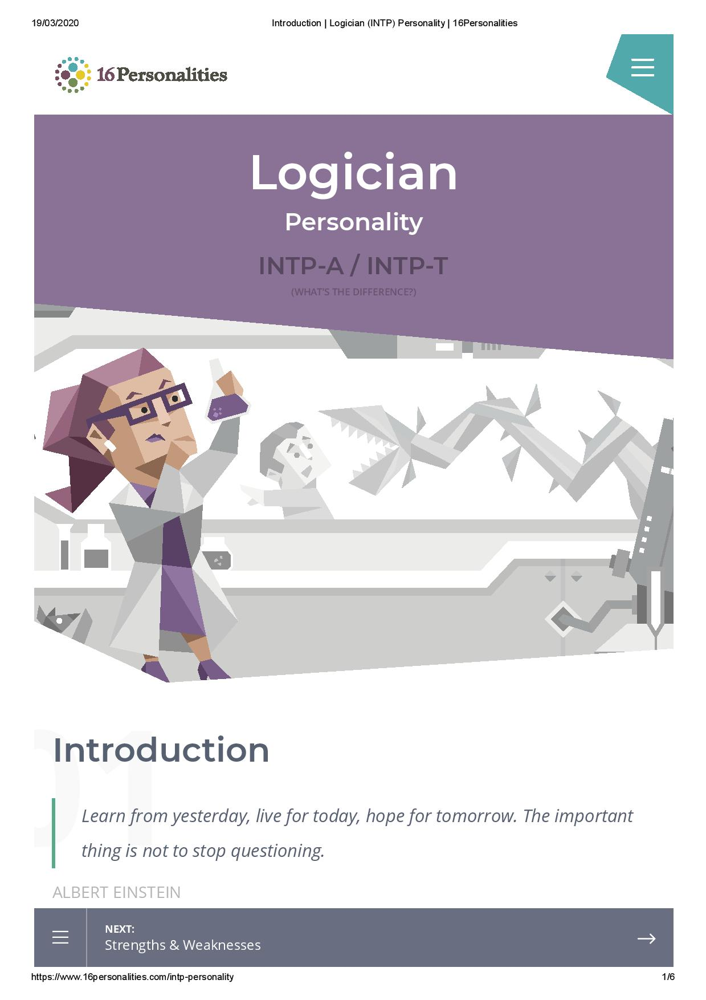
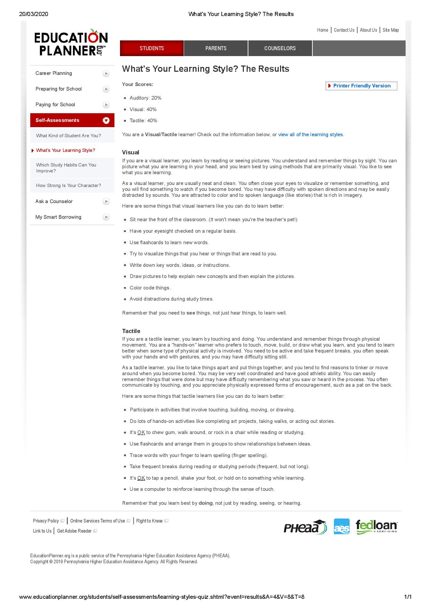
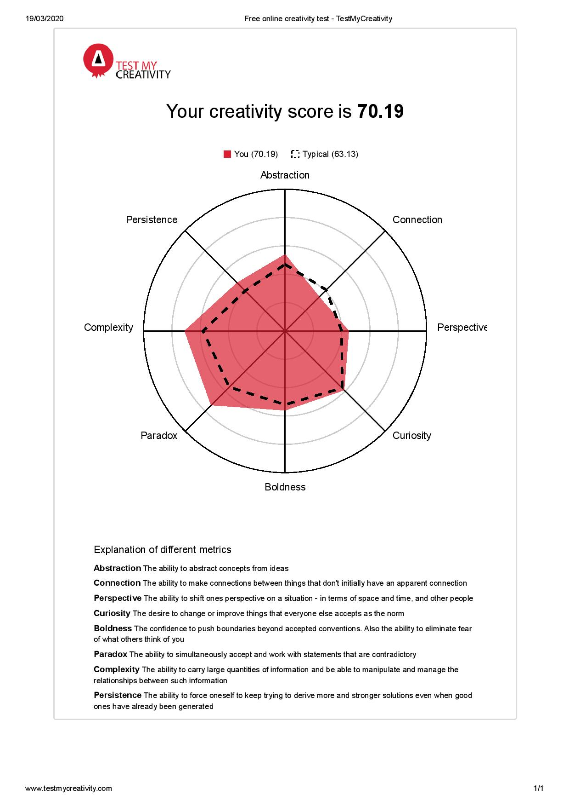

My name is Jacob King, student number s3858820. My email is JacobKing64@Outlook.com. I am an Australian citizen but the rest of my family was born in Hungary. Inside the household is somewhat more European, in terms of culture, than the typical Australian‘s, but I only speak English. After completing high school I went to Curtin for their Engineering and Science enabling course and then did four units in the Engineering foundation year. Only in this semester have I enrolled in RMIT, and I‘m going for a bachelor of I.T. and thinking to major in software engineering. The main hobbies I have at the moment are table-top gaming, mostly 5th Edition D & D, as well as PC gaming.
In my time at Curtin University I have completed three units revolving around I.T. Of these, two were programming orientated and the third was on databases. I learnt the basics of the language C. These units were my first exposure to anything relevant to the I.T. industry. Before this, I played PC games, but I had not had any experience with coding or the backend of software. I immediately started enjoyed these units far more than the others I was enrolled it, so I decided I wanted to major in Software Development instead of Communication Systems Engineering. This might change however, as I get more experience with the field of I.T. and find a passion for a specific field in I.T.
I chose to come to RMIT for a course change originally. I was with Curtin, but decided to change the degree I was doing and the best way for me to do this was through RMIT. The date for course change had gone by for Curtin and RMIT was one of some universities still open for applications. Out of these other universities I chose RMIT because of the future job prospects. RMITs connection to the industry and the engagement RMIT has the industry‘s needs were a key factor in this decision. In a developing field such as IT, connection to the industry‘s needs is essential. I also read up on past students experiences with RMIT, and the major take away from it was that RMIT is more hands on than other universities and gives more opportunity for networking. In my time at Curtin, I had discovered the importance of knowing people in the industry you wish to be part of. This allows you to make connections, making it somewhat easier to find a job once the degree is complete.
By the end of my time with RMIT I expect to have learnt how to program and develop software in a professional setting using different development methodologies. I expect this to involve different programming languages, how to use APIs, databasing, how to wright manuals, teamworking skills, networking, program designing and architecture, how hardware functions and how to communicate effectively. I also expect to know how to apply these skills in a professional setting.
The job is developing software for real world application, most likely for ports, mining and emergency services. This software being developed could be embedded software, web based or for Windows. To me, the two most important requirements of this position are communication skills and the ability to analyse and solve complex problems. I found this position appealing because of the critical thinking aspect – needing to solve complex problems. When I first started to learn how to code, I enjoyed the challenge of solving the problem at hand. Critical thinking was by far the most engaging aspect. Secondly, was thinking about the applications software had in the real-world. Before I learnt the basics of coding, I did not realise software had near unlimited potential if applied and developed properly. That is what I want to do for a job. Something that keeps me engaged and thinking with real world applications.
The position requires a good working attitude, as with most things in life. Someone willing to work at the job. Omnitronics requires the applicant to have a degree in software engineering, or a similar degree. On top of this degree the applicant is also expected to have at minimum of four years in software engineering, as a job. Specifically, they require someone who is experienced in all the stages of developing software from concept to implementation. The language Omnitronics requires for this position is C#. This position will revolve around teamwork, so communication is an essential skill for the job. Not only communicating with the team but on all levels of understanding, customer included.
I have fundamental knowledge of C, visual basic and MS access. I have completed two units in programming one on C and the other on Visual Basic. I have also completed a unit on databasing. All of these units were with Curtin university. I also have good communication skills, having completed Engineering Foundations and Design Principles as well as Engineering Foundations Principles and Communications. Both of these units were purely team-oriented design units, focusing on team communication and collaborative efforts to complete and prototype a project.
The first skill to obtain is knowledge of C#, like any other programming language that will take practice and familiarity. Writing software in C# is the best way to understand the syntax, and dissecting open source projects is another way to gain understanding of limitations of the language. The qualification of “Tertiary Degree in Software Engineering” I plan on getting through RMIT, hence why I am doing this course. The four years requirement of work experience can be gained though other development jobs. Jobs that are less complicated will be an excellent start, especially to gain knowledge of how industry operates, possibly an internship to start with. The ability to solve problems and analyse them is required to do any coding what so ever. The more projects someone works on, the better this skill will become. This is what I plan to do, practice and gain work experience. I have a fundamental knowledge of how to compartmentalise aspects of a project in a small team environment. As with all things this can be improved on, and the best way to that is experience. Time management is my most lacking skill and one of the most important ones. I plan to improve this by trying keep to a schedule for university and is currently something I am working on.

According to the Myers-Briggs personality test on 16Personalities I am an INTP, or Logician personality type. INTPs tend to be quiet and blunt, generally considered to be the most logically precise of the personality types. Patterns and logic are appreciated by the INTP type. When speaking to others INTPs share thoughts that are unfinished, so can come off as unreliable. This is not the case, as the INTP personality type is the most willing and excited to work through a problem, finding the best solution. Once an INTP has an environment that allows it, they will keep working towards the solution – because they enjoy it.

On education planer, I am a Visual/Tactile learner. This means that I need to see how things work and I will need to take them apart and reassemble them. For me to get a good idea on how something works I will need to dissect and reassemble the whole thing, and watch the function unfold. Another way to learn well is by visualisation. To imagine the parts working together. In software visual would be on the flowchart level of design and tactile is the function structure. Tactile would involve manipulation the function and seeing what would happen. Visual would be manipulating the flowchart.

The third test was a creativity test on TestMyCreativity According to this test my Complexity and Paradox scores were above average, and my Connection score was below average. The others were close to average. Connection is the ability to connect things that seem unrelated. Paradox is the ability to work with and accept information that is contradictory. Complexity is the amount of information that can be manipulated at once.
As an INTP, in a group I will be blunt and straight forward with any queries or issues that arise. I will be concise and direct, and this can come off as rude in some situations, meaning I will need to try to be more tactile in my language. Compared to the rest of the team, I will most likely be the last to make connections between things that don‘t already have them. If I do not understand something already, I will need to ask for clarification. Once I understand the connection between parts of the project then I will most likely do well working on my part. When there is an inevitable interpersonal conflict, I will tend to look for a logical solution rather than support the people in question. If emotions run too high, then I will be less capable of diffusing the situation.
When needing clarification on something, it would be best to have someone in the team that can show rather than tell. The less words the better, so someone concise and direct with language would be an ideal choice. Another thing that should be considered is how direct I can be with someone in the team. Since the INTP personality enjoys problem solving, I will need to consider avoiding people who do not. This is so that the work can be even distributed. When conflict occurs between people, I will not be the best choice to diffuse it, so either someone with better personal skills than I is needed or the problem will be shunted to the higher-ups.
The project is an Australia rail manager. It will be software that arranges freight cars hauled by rail for greatest efficiency in chosen variables. The software, given all the information in a system of transportation, can choose to optimise the hauling for either time taken, fuel efficiency both at cheapest cost. If a company needs to move mail or express freight then time is optimised for. Where as a ore hauling train will be optimised to fuel efficiency. The software will also choose the optimal engines to move the type of cargo, given the variable chosen to be optimised. The software will take into account loading and unloading times as well as wagon arrangement, engine statistics and freight weight.
he transportation industry is essential to make the world function, without it, nothing could get done. With increased efficiency in the transportation, the price of shipping decreases allowing for greater spending on other things. Over 413 billion tonnes/km of freight was shipped over rail in 2015 – 2016. Increasing the efficiency of the rail network in Australia will save on the cost of fueling. This project will be interesting because of the potential to expand the scope to beyond rail in the future. It could be applied to trucks and even mining vehicles.
A database will have all the statistics of engines on a specific rail network. These engines service several stations. The software will manage the engines and wagons to create the most cost-effective solution to the transportation needs on that rail network. Needs of the rail network could include high priority mail, requiring maximum speed or could be ore hauling at greatest fuel efficiency. Depending on what the freight is, the software will determine the most cost-effective solution with the assets in the rail network. In future this project could be expanded to controlling the trains automatically.
If a rail network has several engines and wagons in it, the software will automatically generate the most cost-effective solution with these assets. However, this will only be possible if the rail network has several kinds of engines. Existing engines will require new communication infrastructure with the controlling software. In addition, multiple rail networks can be linked together to form a larger network, increasing overall efficiency of rail transportation. Controlling computers will also need to be set up in this infrastructure.
The controlling software will calculate the best possible combination of engines and wagons for a specific task. This task could be speed or efficiency dependant, in either case the software would prioritise the requirement. There will be options in the software to alter the desired cost vs time. If a delivery would take the shortest time, that does not necessarily mean the most efficient regarding cost. If there is a time limit that the hauling needs to be completed by, then the software will prioritise this, at minimum cost.
Distances between stations, be it cargo or refuelling, will operate on a node system. Nodes will reduce the strain on processing power compared to full rail network calculations. Previously found optimal solutions can be saved in the software’s database to further reduce processing needs. This node system can allow for best distance pathfinding, while keeping other train’s routs in mind. As trains pass though nodes, the software adjusts the path the train can take. This will be easy to implement with already existing rail infrastructure. Rail networks operate on blocks, a segment of track that is long enough for a train to stop in, where no other train may enter. Each block will become a node in the software.
With some adjustments to the current scope of the project, the software will also be able to find the most economically viable routs for passengers. Using previous routs and averaging their profitability, the software can also find the most profitable cargo. Companies can focus on these routs to maximize their profits. If there is a line that requires more engines and wagons, the software can inform the company. This allows for informed decision making by the company to further expand their catalogue.
Software required to accomplish this project is not too complicated, if not time consuming to code. Once this base logic module is written, then networking is the next complicated step. However, this is just getting can do what it is supposed to do. To ensure the trains and command/logic module are communicating, there will need to be infrastructure to facilitate it. This could be satellite or radio, depending on which is most cost effective for the given region of track.
There will need to be programming knowledge - though I am unsure of the best language to use for this application. Databasing and networking skills are a must. No specialised hardware is required, and the hardware of the system is pre-existing trains and wagons. This is an extension to pre-existing infrastructure. The skills to program an application such as this should be easy to find, so long as the person programming has fundamental knowledge of coding. Databasing is an easy skill to find or acquire. Networking is not an uncommon skill in the IT field, so overall the skills and knowledge needed for this application are very feasible. The hardest part of this project will be getting rail companies to adopt the software.
If this project is successful then rail companies will have access to real-time rail optimisation and management tools. Once this software is completed, they also have the best engine dispatching solutions available. Companies will also have easy access to their catalogue of engines, wagons, their locations and current deployment. All of this will update in real time with minimal human interaction. Rail companies will require less people working on switchboards to manage routs, saving money on salaries and the transportation of freight.